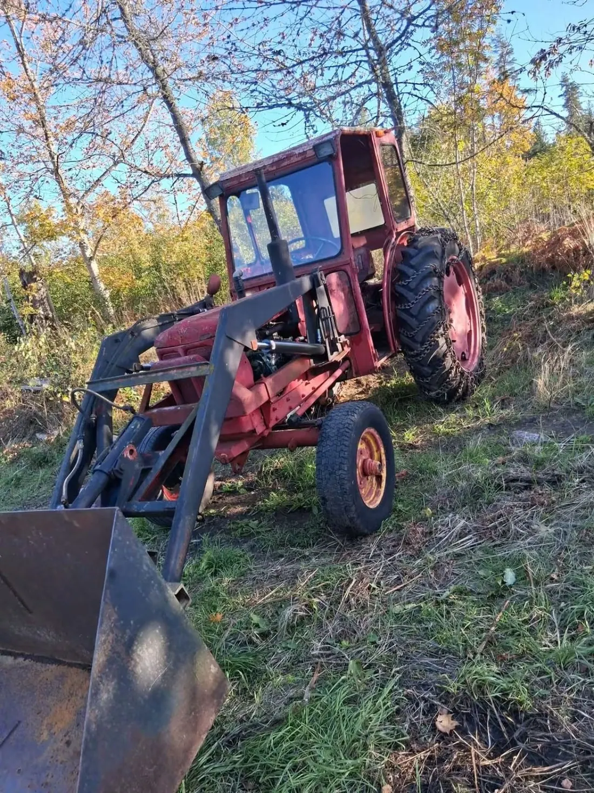
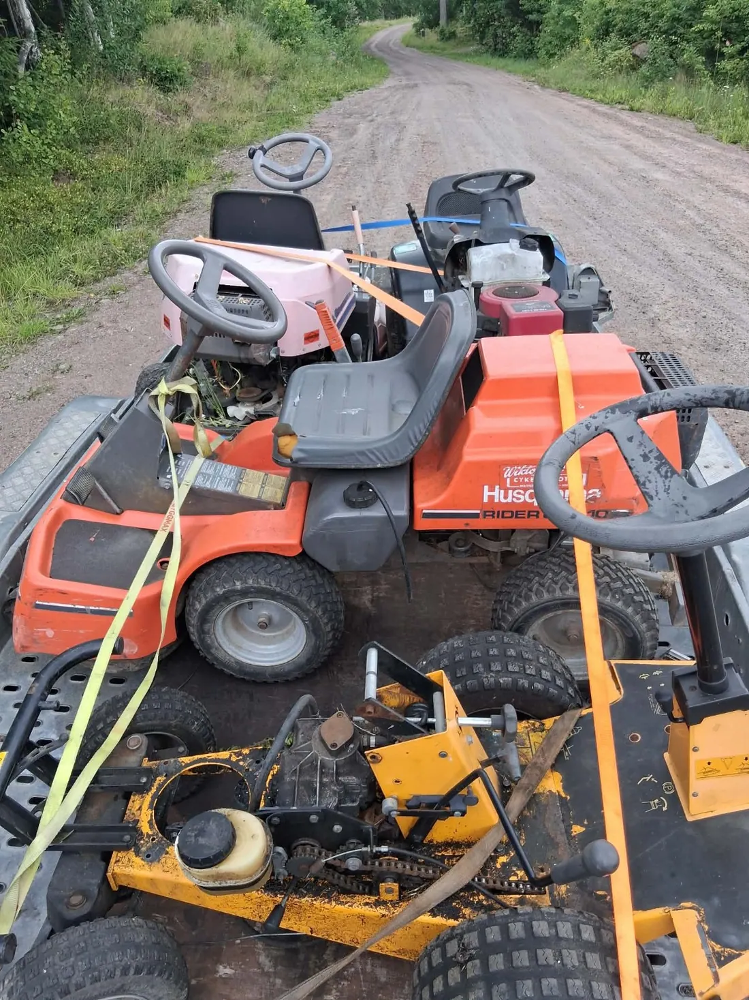
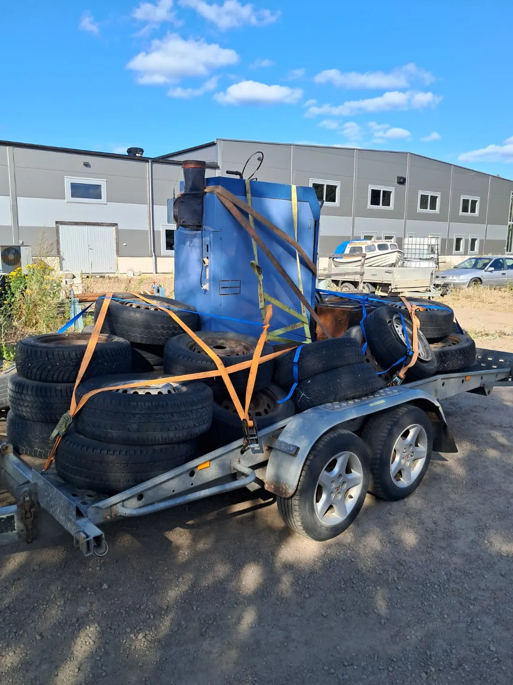

Två bröder. Ett gemensamt intresse. Och stora drömmar.
Vi är två bröder från Hjo som alltid gillat maskiner, handel och att se möjligheter där andra ser skrot. Det som började med små affärer och egna projekt har med tiden vuxit till Skaraborg Maskin & Återbruk – och vi har bara börjat.
Vill du komma i kontakt med oss? Här hittar du våra kontaktvägar →

Vi är fortfarande ett litet företag – men vi tar steg framåt
Vi blir extra glada när människor följer det vi gör, hör av sig om maskiner eller deltar i våra tävlingar. Det är en stor del av drivkraften bakom företaget.
Följ vår utveckling på Facebook ↗. Vi uppdaterar milstolparna när det händer något nytt.
Intresset för handel och maskiner fick vi med oss hemifrån
Det var inte någon färdig företagsidé från början. Det var en nyfikenhet vi växte upp med och fortsatte att bygga vidare på.
Vår pappa har under stora delar av sitt liv köpt, sålt, byggt och skapat. Allt från fordon och maskiner till loppis och olika projekt har varit en del av hans vardag. För oss blev det ganska naturligt att gå samma väg.
Redan som barn drogs vi till att köpa och sälja saker, testa idéer och se vad som gick att göra med sådant som andra inte längre använde. Vi började smått, lärde oss genom att prova och gjorde fler affärer efter hand.
Idag driver vi Skaraborg Maskin & Återbruk tillsammans. Vi tycker fortfarande att det roligaste är att hitta en gammal maskin, se vad den kan användas till och hitta någon som behöver just den.
”Vi ser värde där andra ser skrot.”
Det här är vad vi faktiskt gillar att hålla på med
Ibland gäller det en enstaka gräsklippare, ibland flera maskiner eller ett parti med delar. För oss är det själva arbetet, möjligheterna och människorna vi möter som gör det roligt.


Fotografier från verksamhetens bildarkiv. Bilderna visar exempel på maskiner och utrustning – inte nödvändigtvis ett särskilt uppköp eller en viss ort.
Tre ord som ska synas i hur vi arbetar
Det är lätt att skriva fina ord om ett företag. För oss är det viktigare att försöka leva upp till dem i kontakten med människorna vi möter.
Pålitliga
Vi vill vara raka med vad vi är intresserade av och vad som ingår i en affär. Hellre ett tydligt besked än löften vi inte kan hålla.
Arbetsvilliga
Vi gillar praktiskt arbete, maskiner som behöver ses över och att hitta en lösning när något verkar krångligt.
Drivna
Vi vill fortsätta utvecklas, lära oss mer och bygga upp verksamheten steg för steg – utan att förlora det personliga.
Månadens maskin – och människorna som följer vår resa
En av de roligaste sakerna med att bygga företaget är engagemanget från andra. Därför har vi också startat Månadens maskin, där begagnade maskiner får chansen att hitta en ny ägare genom våra tävlingar på Facebook.
Vi är tacksamma för alla som följer oss, kommenterar, delar våra inlägg eller hör av sig med en maskin. Det betyder mycket för ett litet lokalt företag. Vår förhoppning är att fortsätta skapa fler möjligheter till återbruk, fler affärer och nya roliga inslag tillsammans med er.
En maskin kan vara slutkörd för någon – men användbar för någon annan
Det vi gillar allra mest är när saker får en fortsättning i stället för att bara bli stående eller slängas i onödan.
Vi tittar på möjligheterna
En gammal gräsklippare kan gå att laga. En trasig motor kan innehålla användbara delar. En maskin som inte längre passar hos dig kan fortfarande vara precis rätt för någon annan.
Vi köper, säljer och återbrukar utvalda maskiner, redskap och reservdelar. Vi kan inte ta emot allt, men vi vill gärna titta innan något kastas bort.
Enklare att sälja
Vi vet att alla inte vill lägga tid på annonser, köpare och meddelanden. Där vill vi vara ett alternativ: skicka några bilder så bedömer vi om ett köp är aktuellt.
Vi vill växa till ett välkänt lokalt företag i Skaraborg
Vi drömmer stort, men vill fortsätta utvecklas på ett sätt som fungerar i verkligheten. Våra rötter finns i Hjo, och det är framför allt i Skaraborg vi vill fortsätta göra oss kända.
Målet är att fler ska tänka på oss när de har en maskin som blivit stående, behöver en reservdel eller funderar på om något kan återbrukas. Vi vill fortsätta bygga förtroende genom riktiga möten, affärer och personligt bemötande.
Nu
Fortsätta köpa och sälja maskiner, hjälpa människor med utvalda objekt och bli mer kända i Skaraborg.
Nästa steg
Bygga ett större och mer organiserat lager, utveckla försäljningen och skapa fler samarbeten med företag, verkstäder och lantbruk.
På längre sikt
Utveckla möjligheterna att hämta större partier, ha fler transportresurser och kanske etablera oss på fler platser – utan att förlora vår personliga prägel.
Det här är våra mål, inte färdiga tjänster eller löften om att vi redan har allt på plats.
Lokala även när vi växer
Vi vill vara lätta att nå, tydliga att prata med och fortsatt nära människorna som bor och driver företag i vårt område. Det är viktigare för oss än att försöka verka större än vi är.
Ett företag med rötterna i Hjo
Vi tar emot förfrågningar från både privatpersoner och företag i Skaraborg. Oavsett om det gäller en maskin eller ett större parti vill vi börja med att förstå vad du har och vad som kan vara en rimlig lösning.
Det är så vi vill bygga företaget: ett samtal och en affär i taget.
Vill du följa vad vi gör?
På Facebook delar vi maskiner, bilder från verksamheten, nyheter och Månadens maskin.
Har du något stående? Hör gärna av dig.
Skicka 1–3 bilder på maskinen eller partiet, vilken ort det gäller och det du vet om skicket. Vi tittar på det och återkommer om det kan vara intressant.